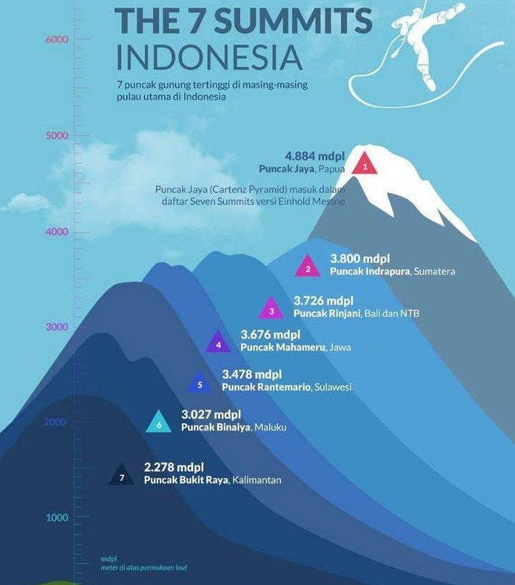

7 Gunung Tertinggi
Indonesia dengan total 629 gunung memiliki tujuh puncak tertinggi yang paling terkenal. Tujuh puncak ini kemudian disebut dengan istilah The Seven Summits of Indonesia. Seperti diketahui, Indonesia dijuluki sebagai ring of fire karena memiliki 13 persen gunung api di dunia. Ada 129 gunung berstatus aktif dan 500 gunung tidak aktif.

Pada umumnya, puncak-puncak gunung tersebut masuk dalam The Seven Summits of Indonesia. Melansir dari laman Kementerian Kehutanan, The Seven of Summits Indonesia merupakan puncak-puncak gunung tertinggi yang mewakili tujuh pulau besar dan wilayah kepulauan di Indonesia: puncak Kerinci (Pulau Sumatera), puncak Semeru (Pulau Jawa), Puncak Bukit Raya (Pulau Kalimantan), Puncak Rinjani (Kepulauan Sunda Kecil), Puncak Binaiya (Kepulauan Maluku ), Puncak Latimojong (Pulau Sulawesi), dan Puncak Cartenz (Pulau Papua).
Puncak tertinggi dari The Seventh Summits berada di Puncak Cartensz, Papua. Secara keseluruhan puncak tertinggi juga berada di Papua lantaran puncak gunung mereka rata-rata berada di ketinggian lebih dari 4000 mdpl.